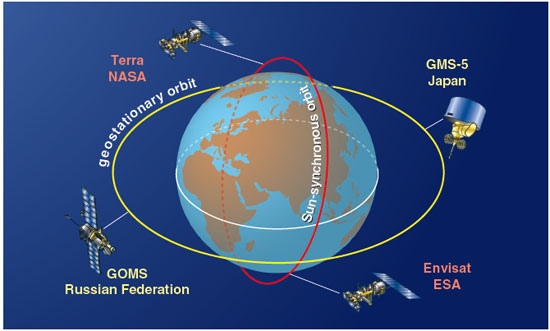
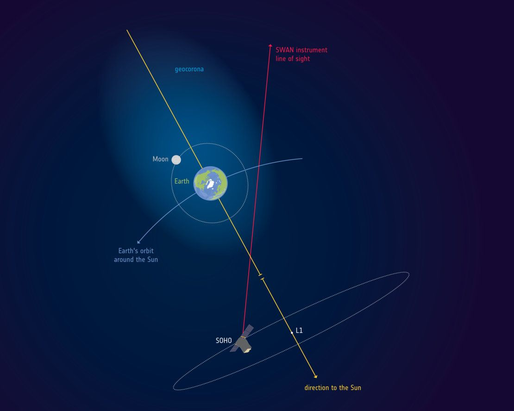
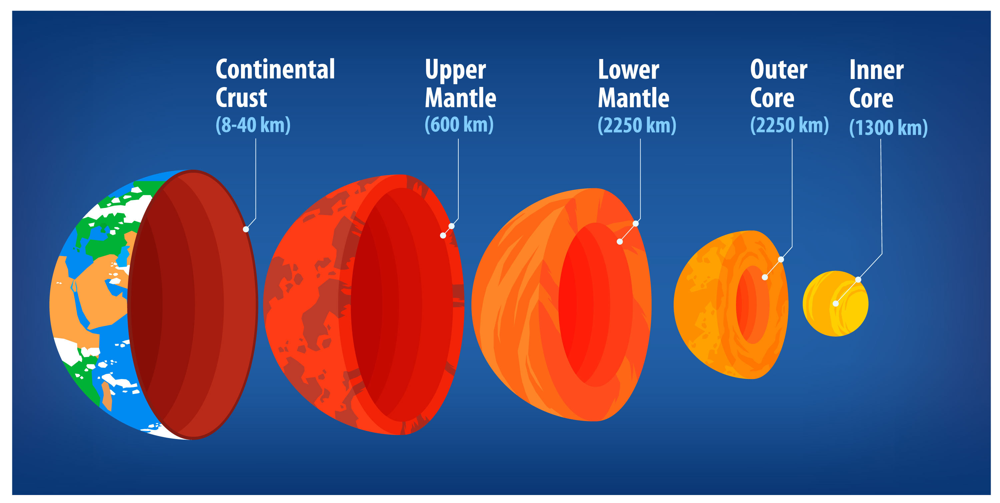

What position is Earth in from the Sun?
earth is the third planet from the Sun.
How old is the Earth?
The Earth is approximately 4.5 billion years old.
What is the Earth's atmosphere made of?
78% nitrogen, 21% oxygen, trace gases.
How many layers does the Earth have?
three main layers: the crust, the mantle, and the core.
What protects the Earth from harmful solar radiation?
The Earth's magnetic field and the ozone layer protect it from harmful solar radiation.
average distance between the Earth and the Sun?
average distance is about 93 million miles (150 million kilometers).
Orbital Science
Orbiting spacecraft study Earth’s atmosphere, ocean, glaciers, and land as a system.
|

|
The Earth's Atmosphere Extends Beyond the Moon :
Earth's geocorona extends up to 630,000 km, meaning the Moon orbits within Earth's atmosphere. Discovered by SOHO and seen by Apollo astronauts, it reveals Earth's vastness.
|

|
Earth's Inner Core is as Hot as the Sun's Surface
The Earth's inner core is extremely hot, with temperatures reaching about 5,700°C (10,300°F), which is as hot as the surface of the Sun.
|

|